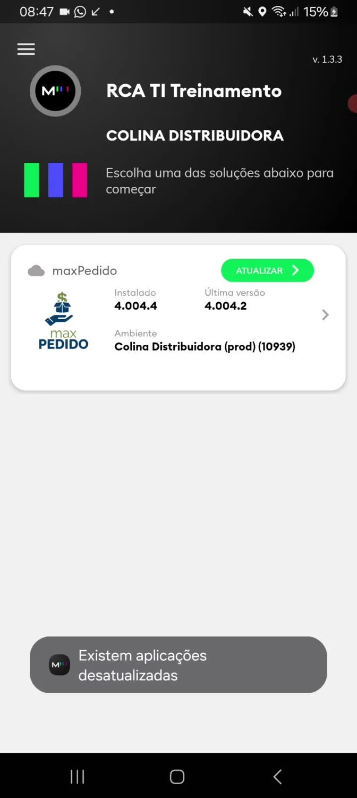
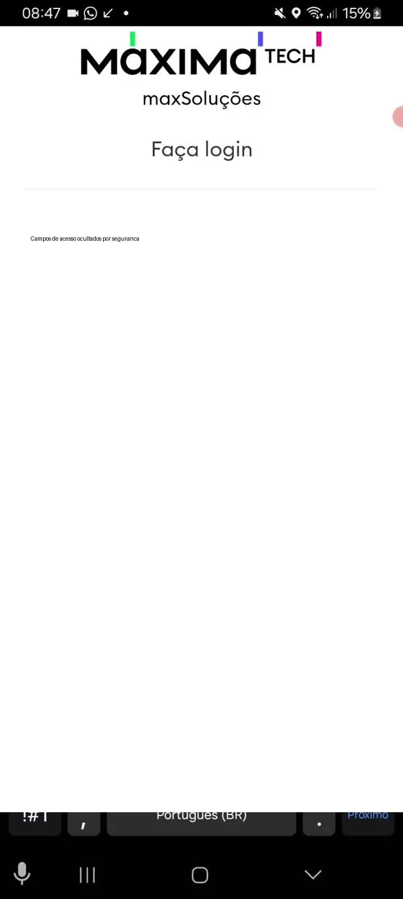
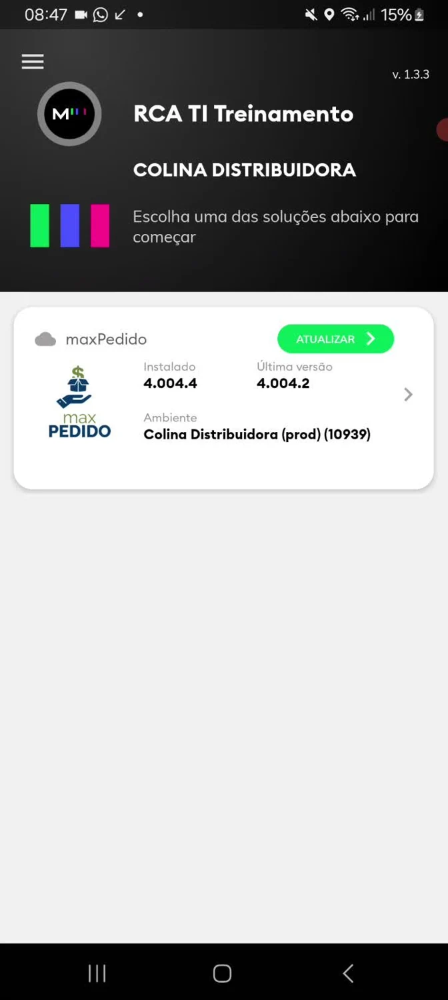

Como atualizar o MaxPedido
Encontre o MaxPedido no aplicativo MaximaTech e inicie a atualização.
Ver passo a passo
- Abra o aplicativo MaximaTech no celular.
- Na tela de aplicativos, identifique sua distribuidora e o maxPedido.

- Na tela de login, entre com suas credenciais autorizadas.

- Após o acesso, localize novamente o cartão do maxPedido e abra os detalhes.

- Toque em ATUALIZAR.
Aguarde a atualização e confira a versão instalada antes de voltar a trabalhar.